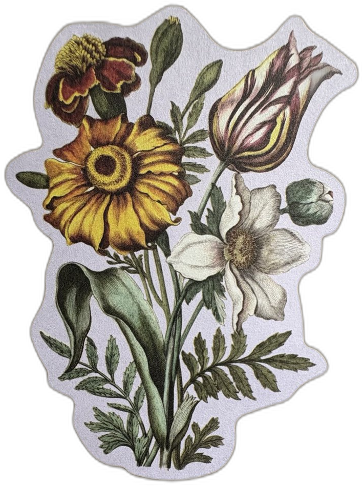
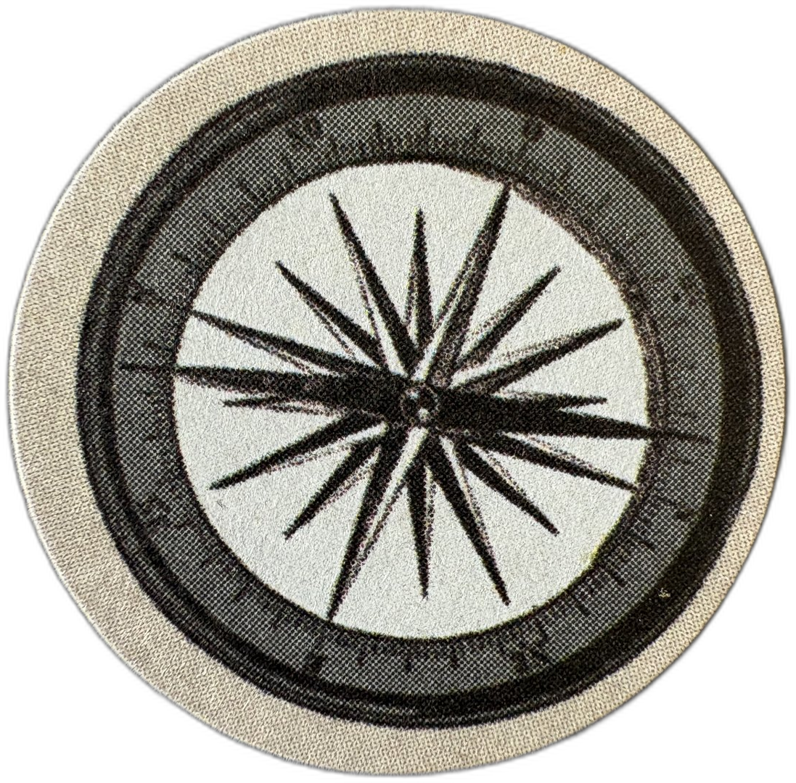

On walking as a method
There is a class of problems that yields not to concentration but to motion. You sit at the desk; the problem stares back. You stand up; you go outside; thirty minutes later, walking, you have it — or you have something better than what you were looking for, which is a clearer view of why the original problem was the wrong one.

The literature on this is older than the laptop and the ergonomic chair. Peripatetic philosophers walked while teaching. Wordsworth composed in the rhythm of his stride. The mind, it seems, prefers a body in gentle locomotion to a body locked in place by the implicit promise of an answer in the next minute.

I think of walking as a method, not a respite. The method has stages. First, the stuck phase: ten minutes of involuntary replay, the same fragment of the problem looping. Then a softening, where the loop loosens enough that adjacent thoughts can enter. Then, sometimes, the thing you came for. The pacing matters; pace too fast and you stay in the loop, too slow and you drift away from the question entirely.
I keep a small notebook for what comes back from these walks. The notebook is mostly disappointing on the page; the entries don’t survive the transition to the desk. But once in a while, something does, and that’s enough.